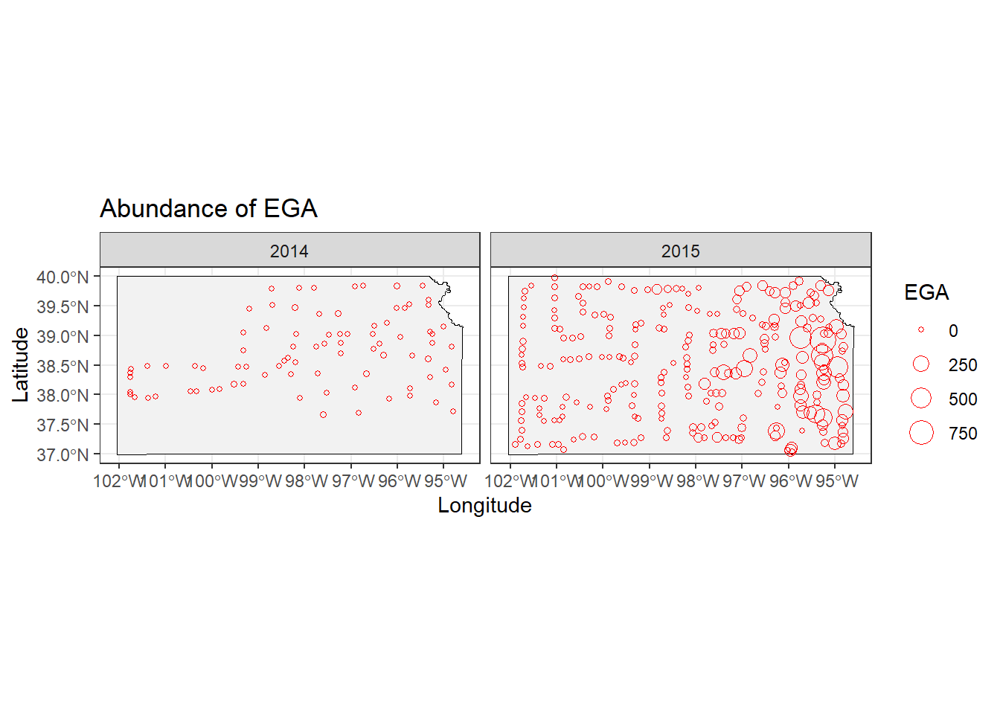
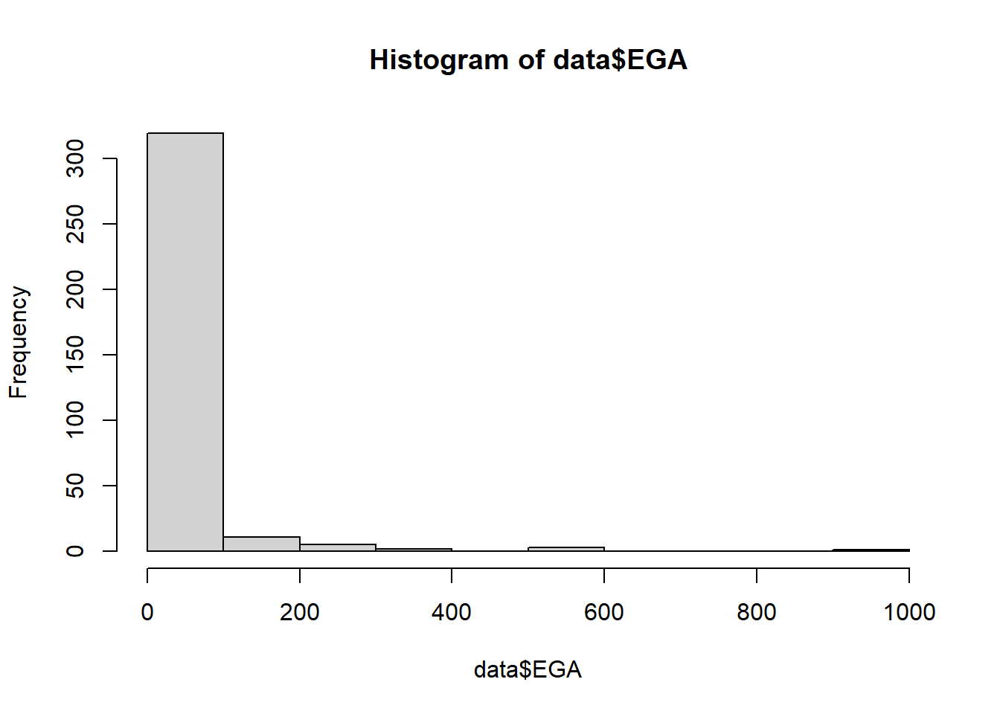
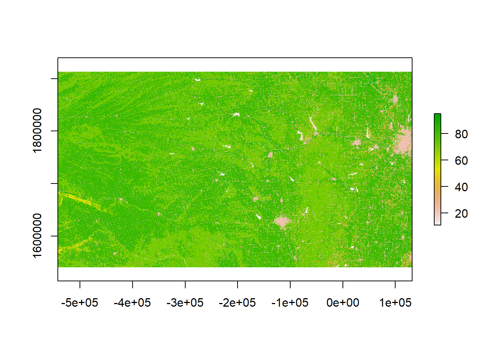
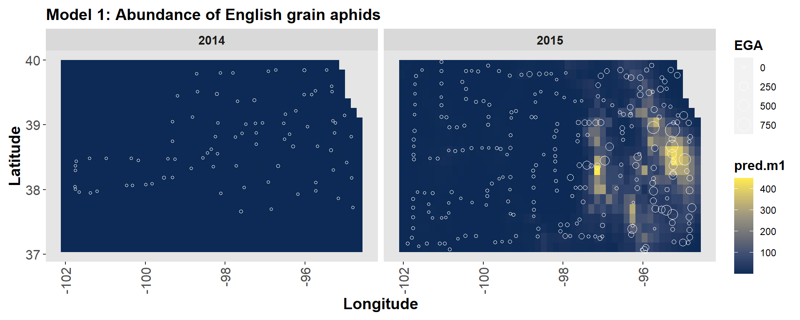
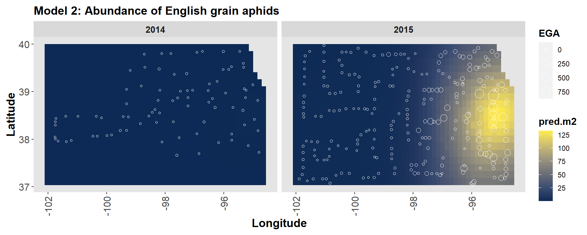
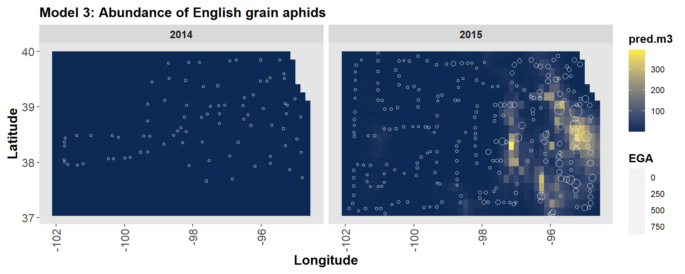
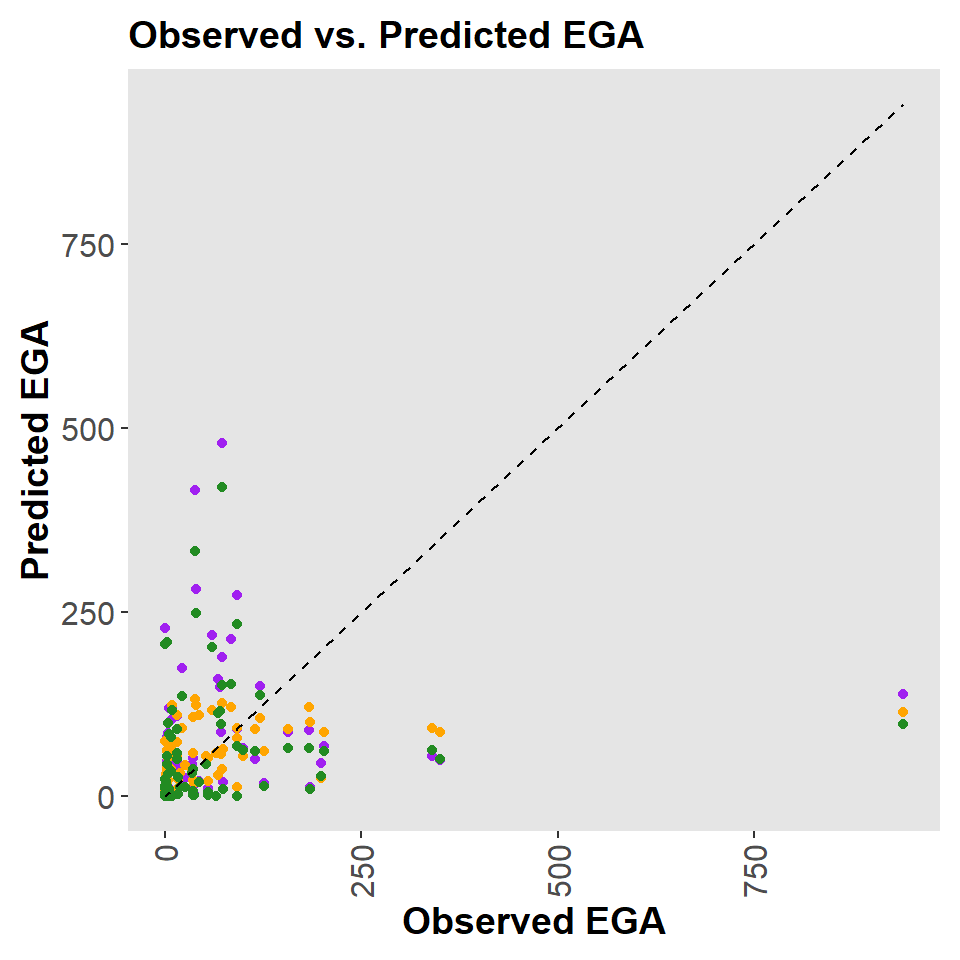

Chapter 9 Activity 3
9.2 Import KS map and aphid data
# Download data on English grain aphid
#url <- "https://www.dropbox.com/scl/fi/9ymxt900s77uq50ca6dgc/Enders-et-al.-2018-data.csv?rlkey=0rxjwleenhgu0gvzow5p0x9xf&dl=1"
#data <- read.csv(url)
#data <- data[,c(2,8:10)] # Keep only the data on English grain aphid
# saveRDS(data, "A3_data.RDS")
data <- readRDS("A3_data.RDS")
pts.sample <- data
coordinates(pts.sample) =~ long + lat
proj4string(pts.sample) <- CRS("+proj=longlat +datum=WGS84 +no_defs +ellps=WGS84 +towgs84=0,0,0")9.3 Data visualization
# Download KS shapefile
#ks <- raster::getData(name="GADM", country="USA", level=1) %>%
# st_as_sf() %>%
# dplyr::filter(NAME_1 == "Kansas")
#saveRDS(ks, "A3_shpKS.RDS")
ks <- readRDS("A3_shpKS.RDS")
coordinates <- st_as_sf(data, coords = c("long", "lat"), crs = st_crs(ks))
# Plot
ggplot() +
geom_sf(data = ks, fill = "grey95", color = "black") +
geom_point(data = data, aes(x = long, y = lat, size = EGA), color = "red", shape = 21) +
labs(title = "Abundance of EGA", x = "Longitude", y = "Latitude") +
facet_wrap(~ year) +
theme_bw()

## Min. 1st Qu. Median Mean 3rd Qu. Max.
## 0.00 0.00 2.00 28.33 15.00 940.00# Download National Land Cover Database
# url.nlcd <- "https://www.dropbox.com/scl/fi/ew7yzm93aes7l8l37cn65/KS_2011_NLCD.img?rlkey=60ahyvxhq18gt0yr47tuq5fig&dl=1"
# rl.nlcd2011 <- raster(url.nlcd)
#saveRDS(rl.nlcd2011, "A3_nlcd2011.RDS")
rl.nlcd2011 <- readRDS("A3_nlcd2011.RDS")
# Make raster file that contains pixels with value of 1 if grassland and
# zero if other type of land cover.
plot(rl.nlcd2011)

# Calculate percentage of land area that is grassland withing 5 km of sampled location
data$grass.perc <- unlist(lapply(extract(rl.nlcd.grass,pts.sample,buffer=5000),mean))*100
hist(data$grass.perc,col="grey",main="",xlab="% grassland within \n5 km at sample location")
9.4 For the data on the abundance of English grain aphids, propose three different statistical models (or machine learning approach) that are capable of predicting the number of English grain aphids at any location within the state of Kansas at any time for the years 2014 and 2015. Make sure to write out the three statistical models using formal notation and fully describe each component using words.
Model 1
\[Z = y\]
\[[y|\lambda] = Poisson(\lambda) \]
\[\eta_s \sim MVN(0, \Sigma)\] \[E(y) = e^{\beta_0+ \beta_1 \cdot X \eta_s+\eta_t}\]
Model 2
\[Z = y\]
\[[y|r,p] = NB(r, p)\]
\[\eta_s \sim MVN(0, \Sigma)\] \[E(y) = e^{\beta_0+ \beta_1 \cdot X \eta_s+\eta_t}\]
Model 3
\[Z = y\]
\[[y|p, \lambda] = ZIP(p,\lambda)\] \[\eta_s \sim MVN(0, \Sigma)\] \[E(y) = e^{\beta_0+\beta_1 \cdot X +\eta_s+\eta_t}\]
9.5 For the three statistical models you proposed in question #1, propose a way to measure the accuracy (and perhaps the calibration) of predictions.
To measure the accuracy of the models we can calculate the Akaike information criteria (AIC), the mean absolute (MEA) and mean square error (MSE).
\(AIC=2k-2 \mathrm {\ln}(\hat {L})\)
\(k\) = number of estimated parameters in the model
\(\hat {L}\) = maximum value of the likelihood function for the model
\(MAE = \frac{\sum^n_{i=1} |y_i - x_i|}{n}\)
\(y_i\) = prediction
\(x_i\) = true value
\(n\) = total number of data points
\(MSE = \frac{1}{n} \sum^n_{i=1}{(Y_i - \hat{Y}_i)^2}\)
\({n}\) = number of data points
\(Y_{i}\) = observed values
\(\hat{Y}_{i}\) = predicted values
9.6 Fit the three statistical models you proposed in question #1 to the English grain aphid abundance data.
set.seed(100)
df.sample <- sample(c(TRUE,FALSE), nrow(data), replace=TRUE, prob=c(0.5,0.5))
df.train <- data[df.sample,]
df.test <- data[!df.sample,]
m1 <- gam(EGA ~ grass.perc + as.factor(year) + s(long,lat, bs = "gp"),
family = poisson(link = "log"), data = df.train)
summary(m1)##
## Family: poisson
## Link function: log
##
## Formula:
## EGA ~ grass.perc + as.factor(year) + s(long, lat, bs = "gp")
##
## Parametric coefficients:
## Estimate Std. Error z value Pr(>|z|)
## (Intercept) -4.072721 0.508579 -8.008 1.17e-15 ***
## grass.perc -0.034166 0.001664 -20.538 < 2e-16 ***
## as.factor(year)2015 6.148542 0.500663 12.281 < 2e-16 ***
## ---
## Signif. codes: 0 '***' 0.001 '**' 0.01 '*' 0.05 '.' 0.1 ' ' 1
##
## Approximate significance of smooth terms:
## edf Ref.df Chi.sq p-value
## s(long,lat) 31.45 31.8 5663 <2e-16 ***
## ---
## Signif. codes: 0 '***' 0.001 '**' 0.01 '*' 0.05 '.' 0.1 ' ' 1
##
## R-sq.(adj) = 0.67 Deviance explained = 81.1%
## UBRE = 17.558 Scale est. = 1 n = 178m2 <- gam(EGA ~ grass.perc + as.factor(year) + s(long,lat, bs = "gp"),
family = nb(theta = NULL, link = "log"), data = df.train)
summary(m2)##
## Family: Negative Binomial(0.653)
## Link function: log
##
## Formula:
## EGA ~ grass.perc + as.factor(year) + s(long, lat, bs = "gp")
##
## Parametric coefficients:
## Estimate Std. Error z value Pr(>|z|)
## (Intercept) -3.29390 0.61890 -5.322 1.03e-07 ***
## grass.perc -0.00141 0.00678 -0.208 0.835
## as.factor(year)2015 5.67995 0.59656 9.521 < 2e-16 ***
## ---
## Signif. codes: 0 '***' 0.001 '**' 0.01 '*' 0.05 '.' 0.1 ' ' 1
##
## Approximate significance of smooth terms:
## edf Ref.df Chi.sq p-value
## s(long,lat) 8.356 11.02 224.3 <2e-16 ***
## ---
## Signif. codes: 0 '***' 0.001 '**' 0.01 '*' 0.05 '.' 0.1 ' ' 1
##
## R-sq.(adj) = 0.263 Deviance explained = 72.7%
## -REML = 493.04 Scale est. = 1 n = 178m3 <- gam(list(EGA ~ grass.perc + as.factor(year) + s(long, lat, bs = "gp"), ~ s(long, lat, bs = "gp")),
family = ziplss(), data = df.train)
summary(m3)##
## Family: ziplss
## Link function: identity identity
##
## Formula:
## EGA ~ grass.perc + as.factor(year) + s(long, lat, bs = "gp")
## ~s(long, lat, bs = "gp")
##
## Parametric coefficients:
## Estimate Std. Error z value Pr(>|z|)
## (Intercept) -3.5612020 0.9360800 -3.804 0.000142 ***
## grass.perc -0.0395195 0.0017325 -22.811 < 2e-16 ***
## as.factor(year)2015 5.5461797 0.9273705 5.981 2.22e-09 ***
## (Intercept).1 0.0008942 0.1018556 0.009 0.992995
## ---
## Signif. codes: 0 '***' 0.001 '**' 0.01 '*' 0.05 '.' 0.1 ' ' 1
##
## Approximate significance of smooth terms:
## edf Ref.df Chi.sq p-value
## s(long,lat) 30.937 31.330 4819.22 < 2e-16 ***
## s.1(long,lat) 2.485 2.891 15.84 0.00131 **
## ---
## Signif. codes: 0 '***' 0.001 '**' 0.01 '*' 0.05 '.' 0.1 ' ' 1
##
## Deviance explained = 78.1%
## -REML = 1761.5 Scale est. = 1 n = 178newPoints <- st_sample(ks, size = 1000, type = "regular") %>%
as(., 'Spatial') %>% as.data.frame() %>%
rename("long" = "coords.x1",
"lat" = "coords.x2") %>%
cross_join(data.frame(year = as.factor(c('2014', '2015'))))
pts.sample <- newPoints
coordinates(pts.sample) =~ long + lat
proj4string(pts.sample) <- CRS("+proj=longlat +datum=WGS84 +no_defs +ellps=WGS84 +towgs84=0,0,0")
# Calculate percentage of land area that is grassland withing 5 km of new points location
newPoints$grass.perc <- unlist(lapply(extract(rl.nlcd.grass,pts.sample,buffer=5000),mean))*100
# Step 2: obtain predictions
newPoints$pred.m1 <- predict(m1, newdata = newPoints, type = "response")
newPoints$pred.m2 <- predict(m2, newdata = newPoints, type = "response")
newPoints$pred.m3 <- predict(m3, newdata = newPoints, type = "response")9.6.1 Plot grid predictions
# Model 1
ggplot() +
geom_tile(data = newPoints, aes(x = long, y = lat, fill = pred.m1))+
labs(title = "Model 1: Abundance of English grain aphids", x = "Longitude", y = "Latitude")+
scale_fill_viridis_c(option = "E", alpha = 0.95)+
theme(legend.background = element_rect(fill = "transparent", colour = NA),
panel.grid = element_blank(),
plot.margin = unit(c(0.5, 0.5, 0.5, 0.5), "lines"),
panel.background = element_rect(fill = "grey90"),
axis.text = element_text(size = 12),
axis.text.x = element_text(angle = 90, vjust = 0.5, hjust = 1),
strip.text = element_text(size = 11, face = "bold"),
title = element_text(size = 12, face = "bold"),
axis.title = element_text(size = 14))+
facet_wrap(~year) +
geom_point(data = data, aes(x = long, y = lat, size = EGA), color = "white", shape = 21) 
# Model 2
ggplot() +
geom_tile(data = newPoints, aes(x = long, y = lat, fill = pred.m2))+
labs(title = "Model 2: Abundance of English grain aphids", x = "Longitude", y = "Latitude")+
scale_fill_viridis_c(option = "E", alpha = 0.95)+
theme(legend.background = element_rect(fill = "transparent", colour = NA),
panel.grid = element_blank(),
plot.margin = unit(c(0.5, 0.5, 0.5, 0.5), "lines"),
panel.background = element_rect(fill = "grey90"),
axis.text = element_text(size = 12),
axis.text.x = element_text(angle = 90, vjust = 0.5, hjust = 1),
strip.text = element_text(size = 11, face = "bold"),
title = element_text(size = 12, face = "bold"),
axis.title = element_text(size = 14))+
facet_wrap(~year) +
geom_point(data = data, aes(x = long, y = lat, size = EGA), color = "white", shape = 21) 
# Model 3
ggplot() +
geom_tile(data = newPoints, aes(x = long, y = lat, fill = pred.m3))+
labs(title = "Model 3: Abundance of English grain aphids", x = "Longitude", y = "Latitude")+
scale_fill_viridis_c(option = "E", alpha = 0.95)+
theme(legend.background = element_rect(fill = "transparent", colour = NA),
panel.grid = element_blank(),
plot.margin = unit(c(0.5, 0.5, 0.5, 0.5), "lines"),
panel.background = element_rect(fill = "grey90"),
axis.text = element_text(size = 12),
axis.text.x = element_text(angle = 90, vjust = 0.5, hjust = 1),
strip.text = element_text(size = 11, face = "bold"),
title = element_text(size = 12, face = "bold"),
axis.title = element_text(size = 14)) +
facet_wrap(~year) +
geom_point(data = data, aes(x = long, y = lat, size = EGA), color = "white", shape = 21)
9.7 For the three models you fit in question #3, which model makes the most accurate predictions? How good is the best model in real world terms? Remember we are trying to predict the number of English grain aphids, which is a count!
pred.m1 <- predict(m1, newdata = df.test, type = "response")
pred.m2 <- predict(m2, newdata = df.test, type = "response")
pred.m3 <- predict(m3, newdata = df.test, type = "response")
# Calculate AIC
AIC(m1, m2, m3)## df AIC
## m1 34.44604 3764.439
## m2 14.12373 980.207
## m3 38.22045 3311.273# Calculate MAE
mae.m1 <- mean(abs(df.test$EGA - pred.m1))
mae.m2 <- mean(abs(df.test$EGA - pred.m2))
mae.m3 <- mean(abs(df.test$EGA - pred.m3))
# Calculate RMSE
rmse.m1 <- sqrt(mean((df.test$EGA - pred.m1)^2))
rmse.m2 <- sqrt(mean((df.test$EGA - pred.m2)^2))
rmse.m3 <- sqrt(mean((df.test$EGA - pred.m3)^2))
mae.m1## [1] 37.94015## [1] 24.29216## [1] 35.37633## [1] 99.04343## [1] 77.86172## [1] 95.28032ggplot(df.test, aes(x = EGA)) +
geom_point(aes(y = pred.m1), color = "purple") +
geom_point(aes(y = pred.m2), color = "orange") +
geom_point(aes(y = pred.m3), color = "forestgreen") +
geom_line(aes(y = EGA), linetype = "dashed", color = "black") +
labs(title = "Observed vs. Predicted EGA",
x = "Observed EGA",
y = "Predicted EGA") +
theme(legend.title = element_blank(),
legend.background = element_rect(fill = "transparent", colour = NA),
panel.grid = element_blank(),
plot.margin = unit(c(0.5, 0.5, 0.5, 0.5), "lines"),
panel.background = element_rect(fill = "grey90"),
axis.text = element_text(size = 12),
axis.text.x = element_text(angle = 90, vjust = 0.5, hjust = 1),
strip.text = element_text(size = 11, face = "bold"),
title = element_text(size = 12, face = "bold"),
axis.title = element_text(size = 14))
9.8 Summarize your results using words, numerical values and figures/maps.
Even though the dataset is small, I decided to divide it into train and test sets, using a more conservative split (50/50), to test the prediction accuracy. Overall, the second model, which assumed a negative binomial distribution for the process model, showed superior predictive accuracy. This was evident in the prediction maps and also reflected by the lower AIC, MAE, and RMSE values compared to the other two models.